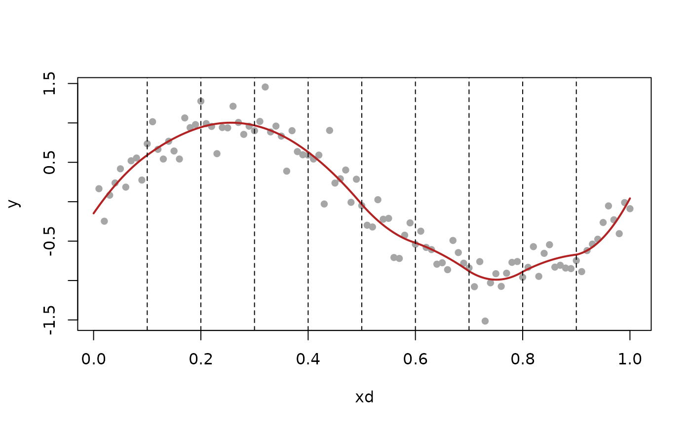

Interpolates a sequence of values within the "canonical" space of discrete splines of a given order, with respect to given design points.
Arguments
- v
Vector to be values to be interpolated, one value per design point.
- k
Order for the discrete spline space. Must be >= 0.
- xd
Design points. Must be sorted in increasing order, and have length at least
k+1.- x
Query point(s), at which to perform interpolation.
- implicit
Should implicit form interpolation be used? See details for what this means. The default is
TRUE.
Value
Value(s) of the unique discrete spline interpolant (defined by the
values v at design points xd) at query point(s) x.
Details
The "canonical" space of discrete splines of degree \(k\), with
respect to design points \(x_{1:n}\), is spanned by the falling factorial
basis functions \(h^k_1, \ldots, h^k_n\), which are defined as:
$$
\begin{aligned}
h^k_j(x) &= \frac{1}{(j-1)!} \prod_{\ell=1}^{j-1}(x-x_\ell),
\quad j=1,\ldots,k+1, \\
h^k_j(x) &= \frac{1}{k!} \prod_{\ell=j-k}^{j-1} (x-x_\ell) \cdot
1\{x > x_{j-1}\}, \quad j=k+2,\ldots,n.
\end{aligned}
$$
Their span is a space of piecewise polynomials of degree \(k\) with knots
in \(x_{(k+1):(n-1)}\)—in fact, not just any piecewise polynomials, but
special ones that have continuous discrete derivatives (defined in terms of
divided differences; see the help file for discrete_deriv() for the
definition) of all orders \(0, \ldots, k-1\) at the knot points. This is
precisely analogous to splines but with derivatives replaced by discrete
derivatves, hence the name discrete splines. See Section 4.1 of Tibshirani
(2020) for more details.
As the space of discrete splines of degree \(k\) with knots in
\(x_{(k+1):(n-1)}\) has linear dimension \(n\), any sequence of \(n\)
values (one at each of the design points \(x_{1:n}\)) has a unique
discrete spline interpolant. Evaluating this interpolant at any query point
\(x\) can be done via its falling factorial basis expansion, where the
coefficients in this expansion can be computed efficiently (in \(O(nk)\)
operations) due to the fact that the inverse falling factorial basis matrix
can be represented in terms of extended discrete derivatives (see the help
file for h_mat_mult() for details).
When implicit = FALSE, the interpolation is carried out as described in the
above paragraph. It is worth noting this is a strict generalization of
Newton's divided difference interpolation, which is given by the
special case when \(n = k+1\) (in this case the knot set is empty, and
the "canonical" space of degree \(k\) discrete splines is nothing more
than the space of degree \(k\) polynomials). See Section 5.3 of
Tibshirani (2020) for more details.
When implicit = TRUE, an implicit form is used to evaluate the interpolant
at an arbitrary query point \(x\), which locates \(x\) among the design
points \(x_{1:n}\) (a \(O(\log n)\) computational cost), and solves for
the of value of \(f(x)\) that results in a local order \(k+1\) discrete
derivative being equal to zero (a \(O(k)\) computational cost). This is
generally a more efficient and stable scheme for interpolation. See Section
5.4 of Tibshirani (2020) for more details.
References
Tibshirani (2020), "Divided differences, falling factorials, and discrete splines: Another look at trend filtering and related problems", Section 5.
See also
dspline_solve() for the least squares projection onto a "custom"
space of discrete splines (defined by a custom knot set \(T \subseteq
x_{(k+1):(n-1)}\)).
Examples
xd = 1:100 / 100
knot_idx = 1:9 * 10
y = sin(2 * pi * xd) + rnorm(100, 0, 0.2)
yhat = dspline_solve(y, 2, xd, knot_idx)$fit
x = seq(0, 1, length = 1000)
fhat = dspline_interp(yhat, 2, xd, x)
plot(xd, y, pch = 16, col = "gray65")
lines(x, fhat, col = "firebrick", lwd = 2)
abline(v = xd[knot_idx], lty = 2)
